FAQ
Часто задаваемые вопросы
Что означают разные уровни?
Уровень 1. Индикатор концептуально ясен, имеет международно-признанную методологию и стандарты доступны, и данные регулярно готовятся странами по меньшей мере для 50 процентов стран и населения в каждом регионе, где показатель имеет значение. Уровень 2: Индикатор концептуально ясен, имеет международно-признанную методологию и стандарты доступны, но страны не предоставляют регулярные данные. Уровень 3: Для данного показателя пока нет методологии или стандартов, установленных на международном уровне, но методология / стандарты разрабатываются (или будут) разработаны или испытаны
Как мне предложить новые или другие источники данных?
Если у вас есть отзывы об источниках данных, которые мы использовали, или у вас есть предложения относительно новых источников данных, пожалуйста, напишите нам по адресу sdg_nsc@stat.kg .
Что означает статус отчетности?
Мы использовали три различных типа статуса отчетности для индикатора, которые также имеют цветовую кодировку: Сообщается онлайн (зеленый) - как минимум, на этом веб-сайте доступны национальные данные по этому показателю, но данные могут быть еще не полностью дезагрегированы. Мы продолжаем получать дополнительные дезагрегации. Статистика в процессе (янтарный) - мы нашли подходящий источник данных для этого индикатора или соответствующего прокси на национальном уровне. В настоящее время мы качественно проверяем данные и готовим их к публикации. Изучение источников данных (красный) - мы все еще ищем подходящий источник данных для этого индикатора. Если есть дополнительная информация о состоянии сбора данных и отчетности по индикаторам, они будут отображаться в верхней части страницы индикатора.
Как часто будут добавляться новые данные на этот сайт?
Мы добавим данные, как только они будут получены и проверены. Это включает в себя новые данные, а также обновления данных, которые мы уже опубликовали. Мы продолжим сбор данных из существующих источников, где это возможно, в сотрудничестве с экспертами по темам.
Что вы делаете, чтобы заполнить пробелы в данных?
По некоторым показателям, хотя у нас могут быть данные на национальном уровне, наши существующие источники данных не всегда позволяют дезагрегировать данные по всем основным группам. Это означает, что нам нужно искать новые источники данных, связывать существующие или моделировать данные.
Насколько доступен этот сайт?
Наша цель - сделать этот сайт максимально доступным и удобным для каждого пользователя. Мы работаем над достижением уровня AA Руководства по доступности веб-контента (WCAG 2.0) .
Какие браузеры я могу использовать для просмотра этого сайта?
Наш веб-сайт работает с большинством последних версий часто используемых браузеров. Есть некоторые проблемы с использованием сайта в старых версиях браузеров, например IE8, и мы работаем над их устранением.
Могут ли другие страны копировать этот сайт?
Да. Этот сайт создан и размещен с использованием 100% бесплатного программного обеспечения и услуг, поэтому другие страны и регионы могут свободно и легко использовать наш код. Техническое руководство по внедрению этой платформы доступно здесь . Страны и населенные пункты, изучающие способы представления собственных данных ЦУР, также могут получить поддержку от Центра открытых данных (CODE) в рамках своей Национальной инициативы по отчетности ЦУР . Построен с использованием Open SDG Свяжитесь с нами печенье
Интересная статистика
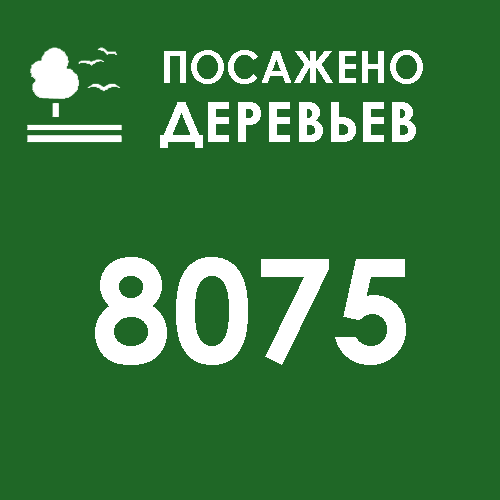
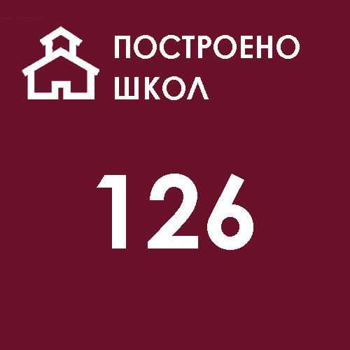
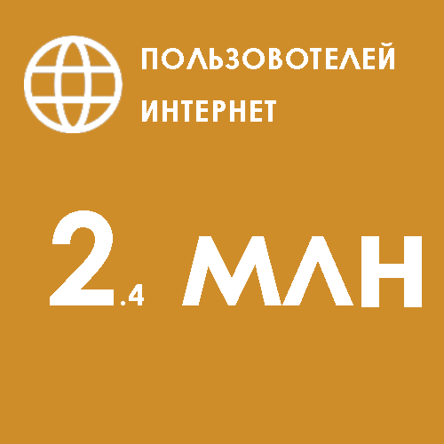
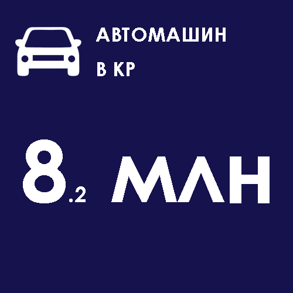
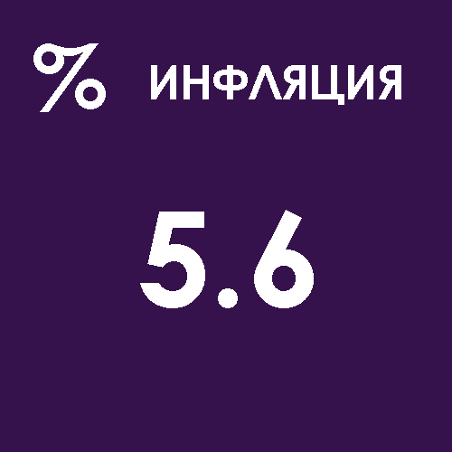
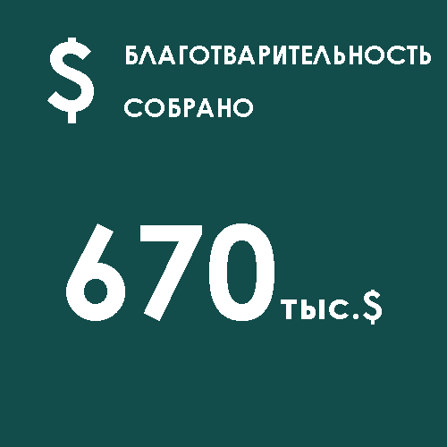
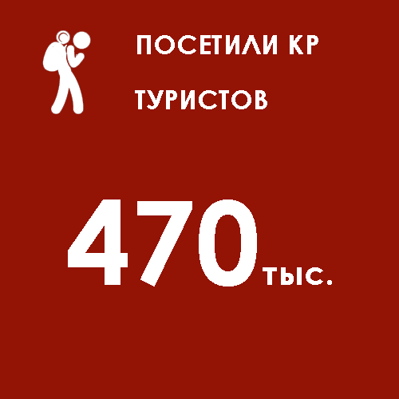
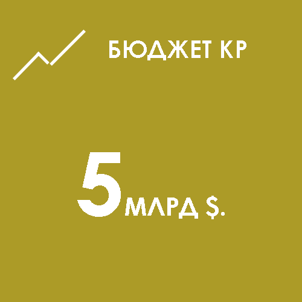

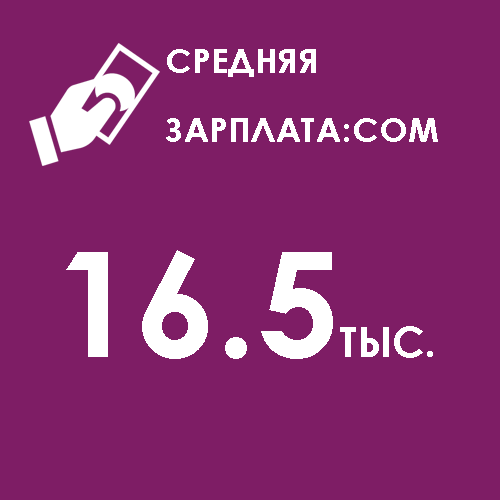
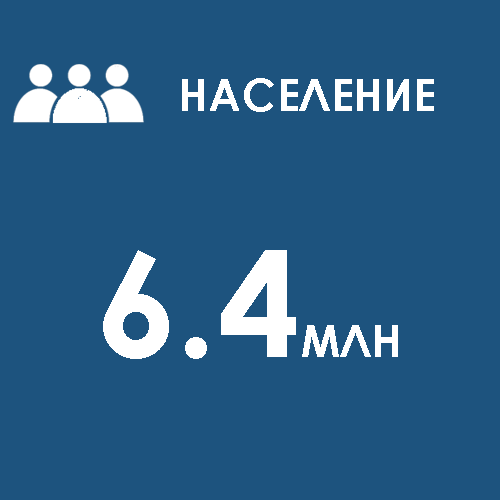
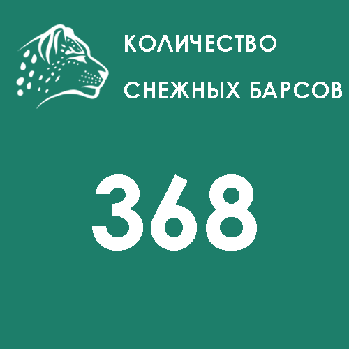
Акция! 30.05.2020
"Посади своё дерево"